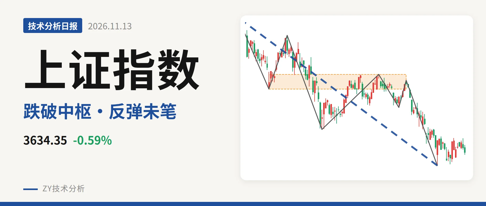
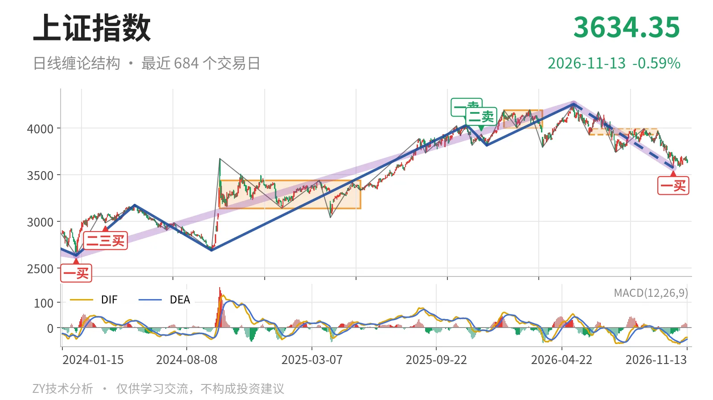
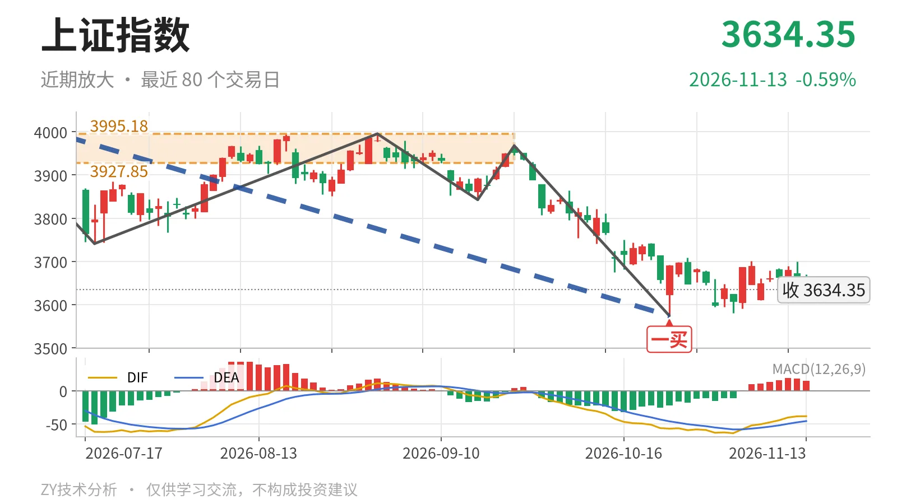

上证指数｜一买反弹未成笔，3634点仍弱于中枢

最近日线中枢 3927.85—3995.18点，收盘位于中枢之下
一句话：一买未坏，反弹未成笔，日线在最近中枢下方偏弱整理。
📉 走势结构：上涨段未坏，日线下跌段仍延续
当前的主导结构是5月14日以来的日线下跌段还在延续，没有结束信号。更大级别上，2024年2月5日2635.09点至2026年5月14日4258.86点的上涨段没有被破坏，但5月14日4258.86点至10月23日3574.27点的下跌段已经跌约16.1%，内含7笔，仍属于该上涨段中的调整。最新日线MACD的DIF为-38.4、DEA为-45.8，DIF仍在零轴之下，柱值14.7，仍属零轴下的修复。最近的10月26日至11月13日反弹最高3708.20点、最低3580.38点，尚未成笔，因此日线线段不能判断反转。2025年12月16日至2026年5月14日的上涨线段已经在4258.86点结束，当前由下跌线段主导。

🧭 中枢与位置：跌破最近日线中枢，中枢下移
最新收盘 3634.35点 已经低于最近日线笔中枢6月8日至9月22日的下沿 3927.85点 约7.5%，处在中枢下方。前一个日线笔中枢1月14日至3月23日的区间4002.78—4190.87点，中轴4096.82点；当前最近中枢区间3927.85—3995.18点，中轴3961.51点。中枢中轴由4097点一线下移至3962点一线，价格又落在中枢下方，说明日线短期压力仍在上方。下方较远处是2021年7月28日至2023年5月9日的线段中枢3312.72—3418.95点，尚未进入当前争夺。
🔍 买卖点：10月23日一买仍属笔级别
最新的日线笔买点是10月23日一买 3574.27点，位于9月22日至10月23日的日线下跌笔末端。该笔已经结束，一买本身未被破坏；但此后的10月26日至11月13日走势尚未成笔，因此这个一买目前只属于日线笔级别，对5月14日以来的日线线段反转确认不足。2025年11月14日一卖4034.08点和2025年12月8日二卖3936.31点之后，2026年5月14日又创出4258.86点新高，因此这两个卖点已降为小级别信号，不能继续当作日线线段一卖、二卖。当前日线线段仍以5月14日开始的下跌段为主导。

⚖️ 背驰：DIF新低不新弱，绿柱未收缩
背驰比较选9月22日至10月23日下跌笔与6月23日至7月20日下跌笔。前者价格创3574.27点新低，DIF低点由-61.8抬升至-57.1，出现新低不新弱；但绿柱面积由289扩大到347，下跌动能没有整体收缩。因此10月23日一买更接近小级别背驰触发，尚不能据此宣布日线线段下跌完成。当前还在延续的走势仍以这段下跌作为参考，若后续反弹不能形成有力笔破坏，背驰仍只停留在笔级别。
🛡️ 关键位置：3928点与3574点定强弱
当前最需要看的是 3928点一线 的中枢下沿。10月26日以来反弹最高3708.20点，尚未回到3928点上方，更没有触及6月23日低点3741.11点上方。若反抽仍回不到3928点上方，结构上相当于对6月8日至9月22日中枢的第三类卖点，5月14日以来的下跌段还将延续；若重新站上3928点，则更可能只是中枢扩展，10月23日一买才有升级为线段低点的条件。下方 3574点一线 若被有效跌破，10月26日以来的平台就只是下跌中继。回到3928点上方之前，日线仍在最近中枢下发散，弱在反弹未成笔、未回中枢。
⚠️ 本文为基于公开行情数据的缠论技术结构记录，由程序自动计算并生成，仅供学习交流，不构成任何投资建议。市场有风险，投资需谨慎。